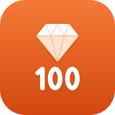

이번 주 말씀 · 23번 · 예수 그리스도
요한복음 1:29
이튿날 요한이 예수님께서 자기에게 오시는 것을 보고 말하였다. 보십시오, 세상의 죄를 없애시는 하나님의 어린양이십니다.
정한 때에 다음 말씀을 알려 주는 기능입니다. 매일은 외운 만큼 넘어가고(못 외웠으면 같은 말씀을 한 번 더), 매주는 반과 맞추려고 달력대로 월요일마다 다음 번호로 넘어갑니다. 시작 번호는 알림과 오늘의 말씀에 함께 적용됩니다. 날짜는 2026년 10월 13일(화)을 기준으로 한 예시입니다.
정한 때에 외울 말씀을 알려 줘요.
매일 또는 매주 월요일, 다음 말씀이 알림으로 와요.
하늘이
요한복음 1:29부터
월요일마다 다음 번호로 넘어가요. 반 친구들과 같은 말씀을 외워요.
요한복음 1:29부터
외운 만큼 넘어가요. 어제 말씀을 아직 못 외웠으면 같은 말씀을 한 번 더 알려 줘요. 그날 이미 외웠으면 알림을 보내지 않아요.
10월 19일 월요일
7:31매주 · 월요일

이번 주 말씀 · 23번
요한복음 1:29 — 이튿날 요한이 예수님께서 자기에게 오시는 것을 보고 말하였다.
매주 · 목요일 (한 번 더)
이번 주 말씀, 기억나요?
요한복음 1:29를 안 보고 말해 봐요.
매일 · 어제 말씀을 못 외웠을 때
어제 말씀, 오늘 마저 외워요
23번 요한복음 1:29 — 이튿날 요한이 예수님께서…
100구절을 다 외웠을 때 (한 번만)
열두 보석이 모두 빛나요!
두 번째 바퀴를 시작해 볼까요?
안녕, 하늘이! 이번 주 말씀이에요
이번 주 말씀 · 23번 · 예수 그리스도
이튿날 요한이 예수님께서 자기에게 오시는 것을 보고 말하였다. 보십시오, 세상의 죄를 없애시는 하나님의 어린양이십니다.
아이폰은 홈 화면에 추가해야 알림이 와요
알림 대신 달력으로 받기
부모님 휴대폰 달력에 매주 말씀 일정을 넣어요. 일정 알림으로 장절과 앱 링크가 와요.
매주 월요일 오전 7:30, 23번부터
100번까지 78주 일정이 한 번에 들어가요. 일정마다 그 구절 링크가 있어요.